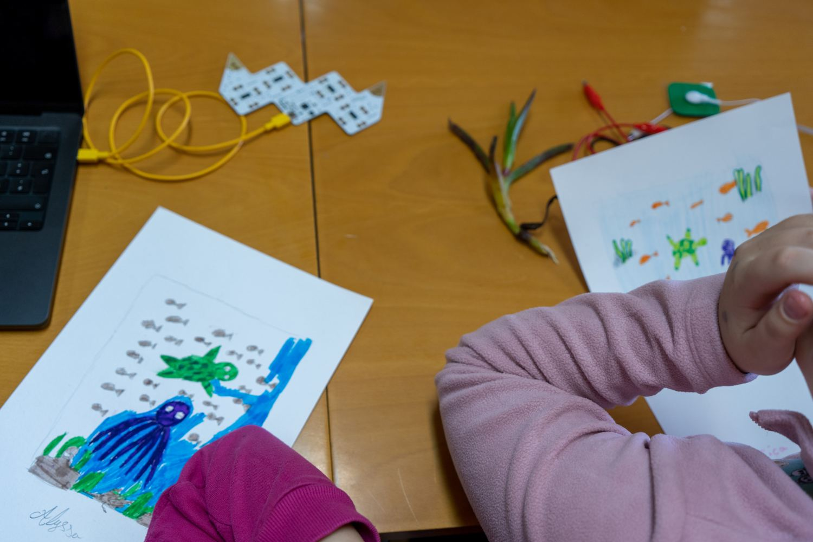

Playtron
A small board with sixteen inputs. Clip a cable from an input to anything that conducts: a strip of copper tape, a banana, a bowl of water. Touch the object while you also touch the ground, and that input plays.
- Inputs
- 16, plus a ground point (the gold corner)
- In the box
- USB cable, 18 alligator clips
- Good for
- One drawing with many parts, or a whole table of objects